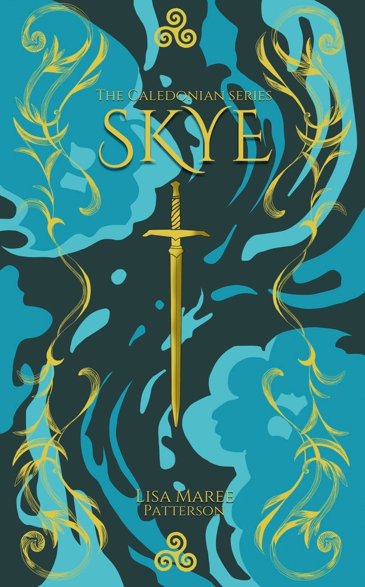
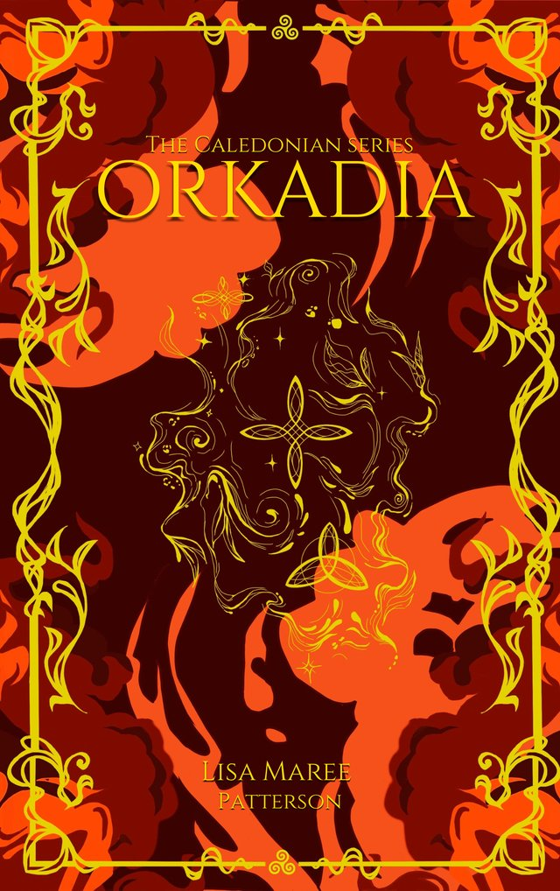
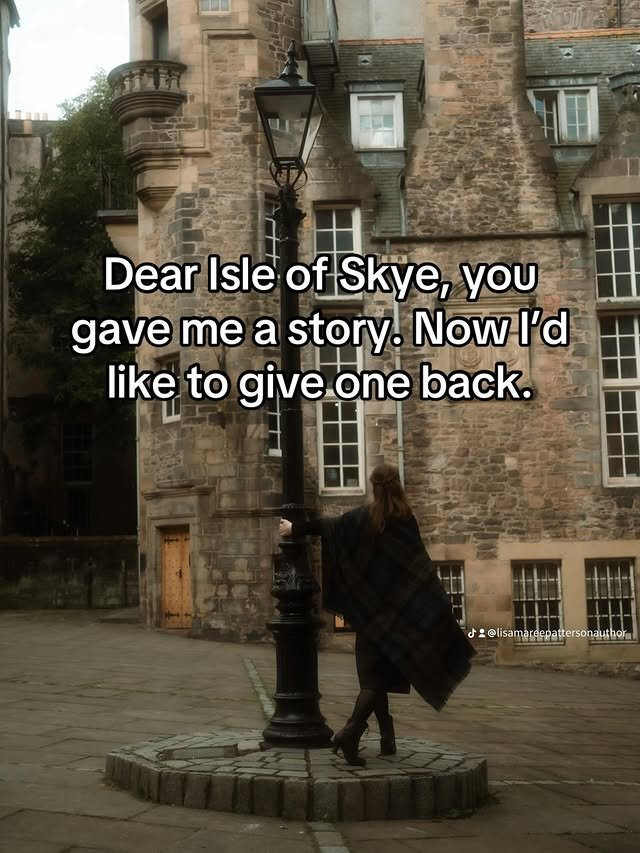
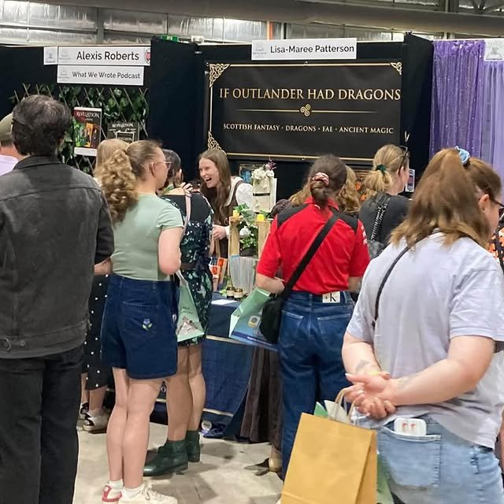

Skye
The Caledonian Series, book one
Lady Alix MacLeod was never meant to live quietly. Raised among clan loyalty, ancient stone, and whispered legends, she feels the pull of something older than the Highlands themselves.
Drawn into a hidden world of dragons, fae, and warrior bloodlines, Alix discovers her family’s connection to a power bound to the legendary Scáthach, the warrior goddess of myth. Because in the Highlands, magic always demands a price.
The heart of Outlander with the mythic intensity of Throne of Glass.
- BooktopiaPaperback
- ReadingsPaperback
- Amazon AustraliaPaperback
- Signed, from Lisa-MareeA$25, Australia only

Orkadia
The Caledonian Series, book two. Published 1 December 2025
Alix MacLeod thought the war ended when the Black Coats fell, but her mother’s disappearance through the stones has changed everything.
In a land where dragons once ruled the skies and the Auld magic stirs again, Alix must learn to control the storm that lives within her.
And the ancient prophecy of the twin moons is awakening.
To the Isle of Skye
A little piece of my heart belongs to the Isle of Skye.
Lisa-Maree, on Instagram, 14 November 2026
She’s sending one special edition of Skye to a reader who lives on the island. To enter, comment your favourite place on Skye. Entries close 1 December.


Sold out in Sydney
Book Fair Australia, 7 and 8 November 2026. Lisa-Maree sold out at table 204, under a banner that read “If Outlander had dragons”.
About Lisa-Maree
Lisa-Maree Patterson is an Australian author who has always been captivated by Scotland. After a life-changing visit, the Isle of Skye’s landscapes, history and legends became her first fantasy novel.
- Writes from a little town in Australia
- Keeps a cosy library and bakes homemade apple crumble pie
- Dreaming of her next trip to Scotland
Signed copies, posted from Lisa-Maree
Paperbacks signed by Lisa-Maree and posted within Australia.
- SkyeA$25
- OrkadiaA$25
- Both booksA$40